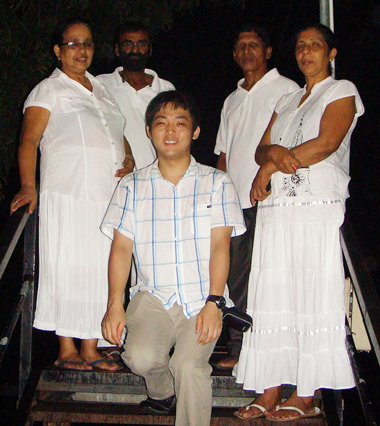
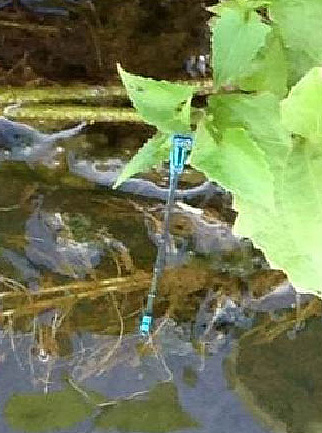

「英語能力向上と大学の卒業論文でスリランカについて書こうと決めていたので、そのためのフィールドワークも兼ねて2週間程のホームステイをさせて頂きました。
アジア一人旅の経験はありますが、ホームステイは初めてだったので、最初は『ホストファミリーって、どんな人だろう？』『ホストファミリーへのお土産って何にするべきだろう？』『英語の授業や宿題は大変かな？』等々、出発前も到着直後もかなり不安でしたが、ホストファミリーも英語の先生も現地団体の人もとても親切な方々でした。
お土産に関しては、お菓子や手ぬぐい、子供向けのユニークな文房具等を持っていきました。
それと私が滞在中に使っていた洗濯用粉洗剤をホストファザーが欲しがったので、あげたら喜んでくれました。
実用的な品物が喜ばれると聞いて、特に思いつきませんでしたが、洗剤とか日常的に使うものでも喜んでくださるみたいです。
今度持っていく時は、その辺も考慮したいと思います。
私が行った期間はたまたま満月祭（ポヤ・デー）があり、ホストファミリーに近場の寺院へ連れて行ってもらいました。
日本では拝むことが出来ない幻想的なものでした。
他にもペラヘラ祭りというものがあるそうですが、開催時期が過ぎていたので、またの機会に見に行きたいと思います。
低開発村視察では、シナモン畑を見せて頂きました。
また、シナモンをどのように加工するのかを見せて頂き、その場で取ったばかりの生のシナモンを食べさせてもらいました。
私が行った時には周囲には大自然が溢れ、野生のクジャクもいましたが、来年にはダムが出来、道路も新しく作られると聞いて、少し複雑な気持ちになりました。
コロンボなどの大都市を除けば寂れた所がある国というのが行く前の印象でした。
確かに、そういう発展途上という面もあるにはあるのですが、逆にそういう所の方が温かみを感じる国だと感じました。
あと、現地の人々に対する印象としては、行く前は『人懐っこい人が多い』と感じていたのですが、どちらかというとシャイな人の方が多い様な気がしました。

英語の授業に関しては、最初の何日かは先生が病気で来ることが出来ず、ホストシスターが代わりに英語の授業をしてくれました。
ホストシスターもとても英語が上手で、授業も分かり易かったです。
私が動物や珍しい虫に興味があると話すと、近くの農村に行き、日本では見られない虫を色々見せてくれました。
英語の先生にもコロンボの街を案内して頂きました。
日本語が一切通じない状態というのも段々なれてくるから不思議です。
他にも、ホストマザーやホストシスターが働いている近くの街に連れて行ってもらい、その街にある市場や本屋等にも連れて行ってもらいました。
ホストシスターの小学生の娘さんともバトミントンや折り紙で遊んだり、シンハラ語の単語を教えてもらったりと、とても仲良くさせてもらいました。
本当はシーギリヤ等も行きたかったのですが、時間の都合上行けなくなってしまったので、スリランカに行く機会を作って、必ず行きたいと思います。
初めてのホームステイということもあり、行く前は不安でしたが、旅とは違う貴重な体験が出来て、とても充実した時間が過ごせました。
ホストファミリーの皆さんはとても親切で、その不安もすぐに解消されました。
一人旅の場合は話し相手がいなくて辛い思いをすることもあるのですが、ホームステイだと『とにかく話さないといけない』という気持ちになれるので、今まで体験したことがない感覚でした。
最初は２週間は長すぎるのではないかと思っていましたが、今では短すぎたかもしれないと感じています。
バックパッカーとしてアジアを旅したこともありますが、旅とホームステイでは得られる体験も見える景色もまるで違うと感じました。
拠点を定めて海外に滞在するというのは私にとっては新鮮でした。
次にスリランカに行くときには必ず、行き損ねた場所にも訪れたいとも強く思いました。
色々ありがとうございました。
ボホマストゥティ（どうもありがとうございました）。」